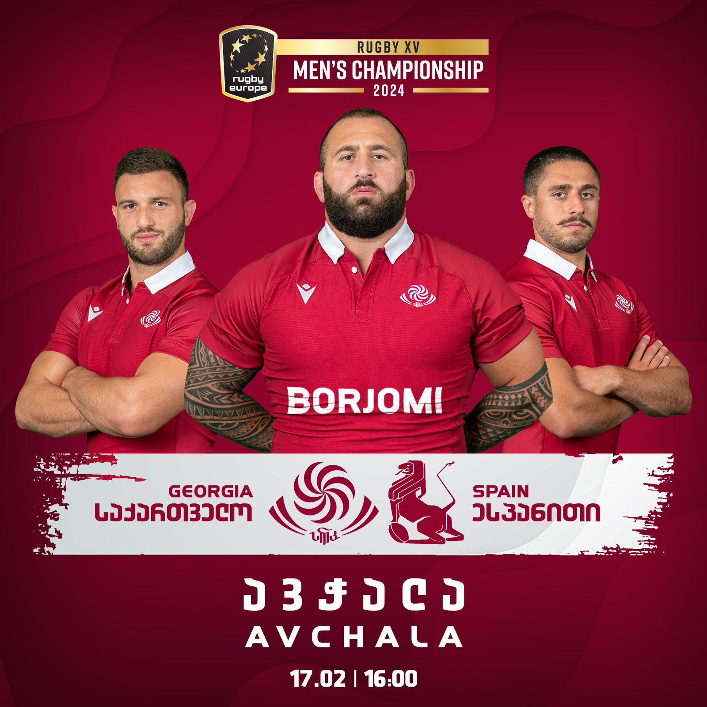
Georgian Rugby Union
A season of a national team, designed end to end
Match key visuals, ticket campaigns, sponsor lock-ups, standings tables and a festival identity — the whole visual output of a national federation, made in-house. Not one poster: a system that had to hold every week of a season, in Georgian, at every size a ticket site, a stadium screen and a sponsor's ad slot asks for.
- Role
- Created. The visual language, the layouts and the Georgian type are mine, across every surface the union publishes.
- Scale
- A full season's output for a national federation — match key visuals, ticket campaigns, sponsor lock-ups, standings and a festival identity, including one European final delivered in sixteen separate placement sizes.
- Authorship
- Created
- Years
- 2023–2024
- Volume
- 48 pieces on this page · 1:1 27 · banner 13 · 9:16 6 · 16:9 2
- Credit
- Produced at AdsomeFish, Tbilisi. Graphic & Motion Designer: Gedevan Kuprava.
EPCR Challenge Cup, Cardiff 25 — one final, every placement 16
One European final, sixteen real placement sizes, shown here at their true relative scale — a 350×100 sidebar next to a 1600×533 masthead, at the proportion they actually run at. Every size is a separate build: the Georgian headline re-broken, the player crop re-framed and the sponsor row re-stacked to survive a strip 110 pixels tall.

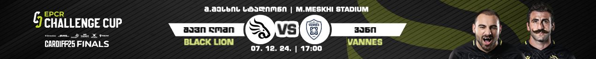
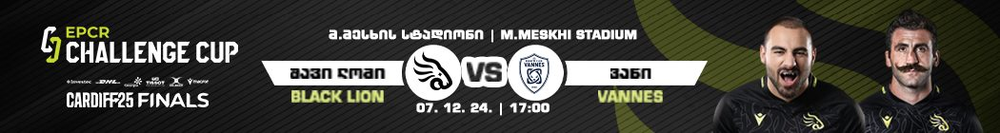

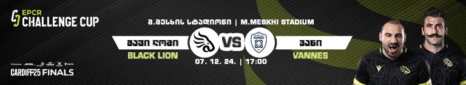
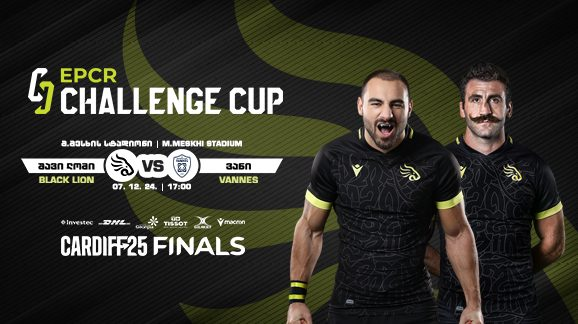
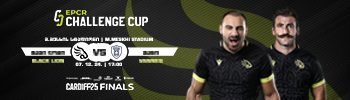

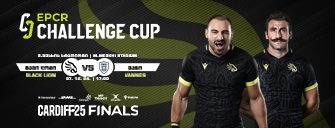
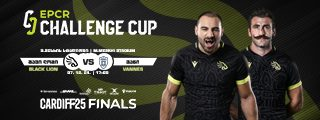
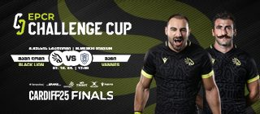
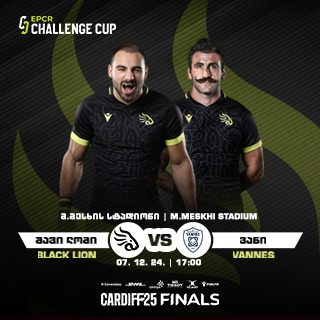
Shown at true relative scale. Each caption is that file's real pixel size.
Match key visuals 10


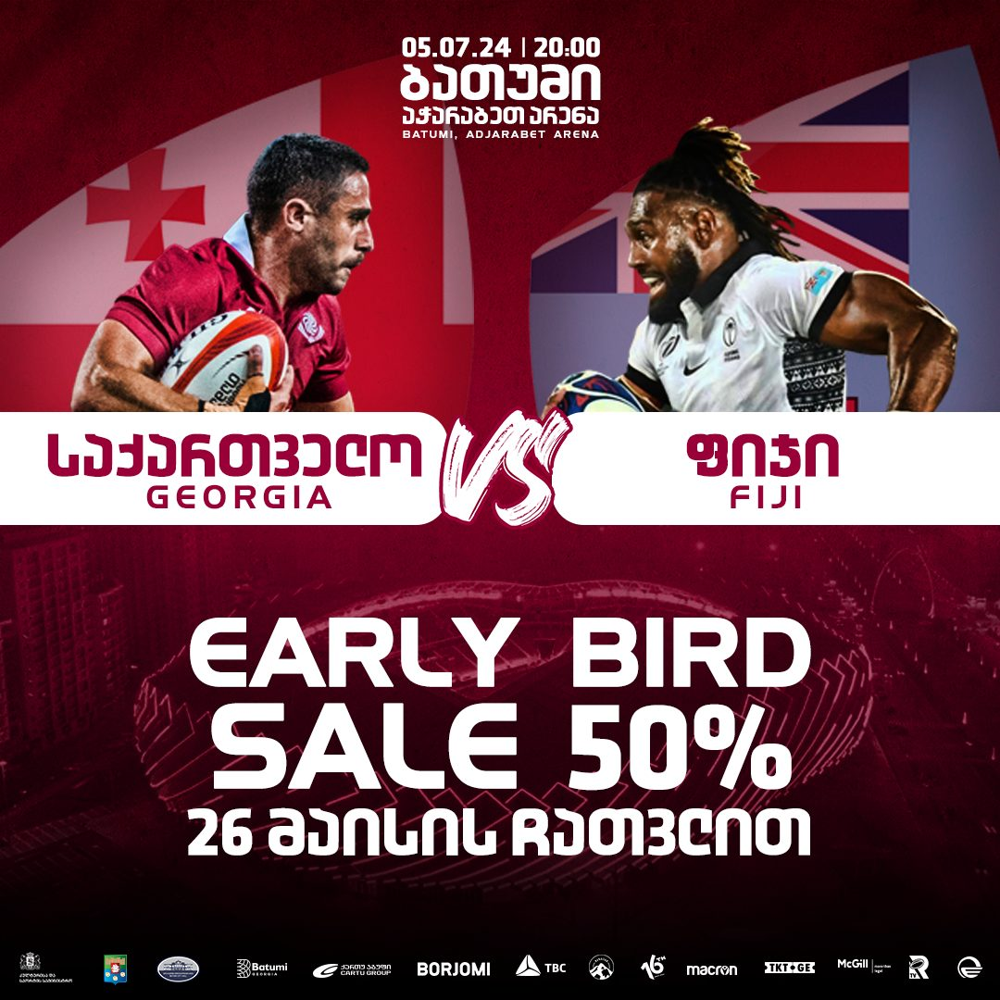
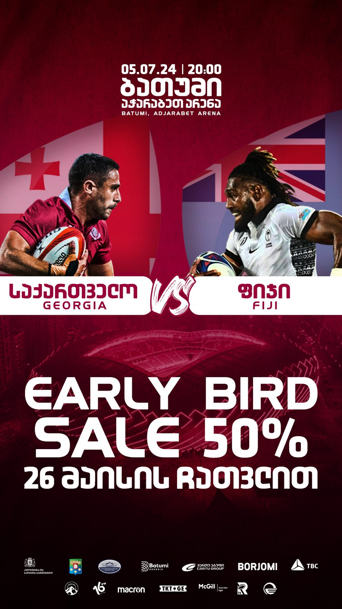

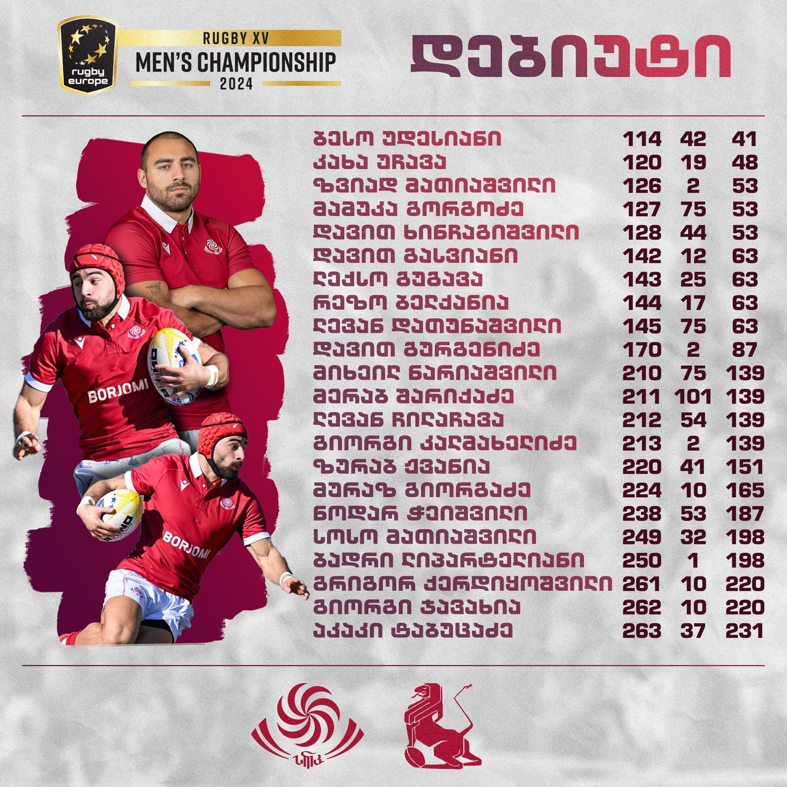

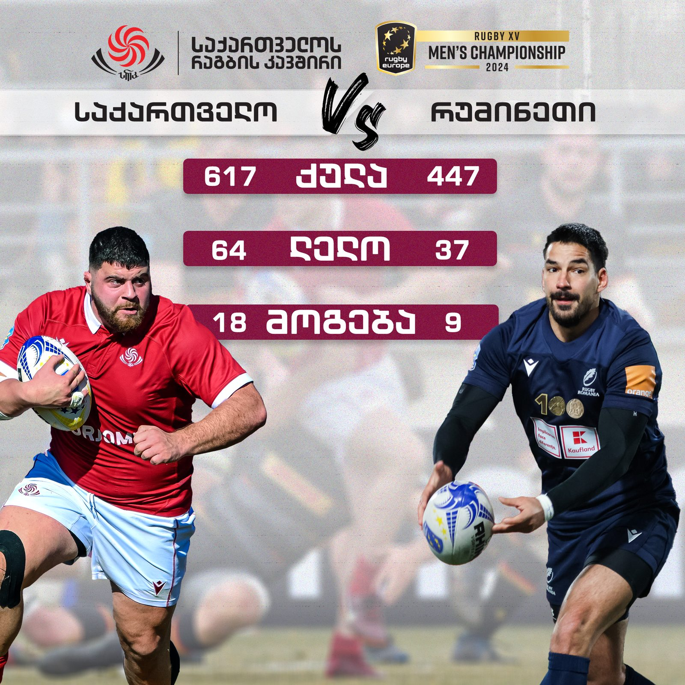
Tickets, gate and promotions 6


Debut lists, match statistics and standings 6

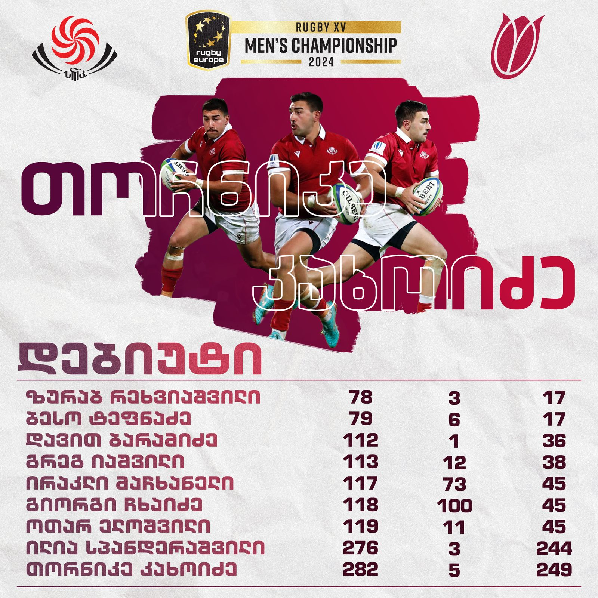


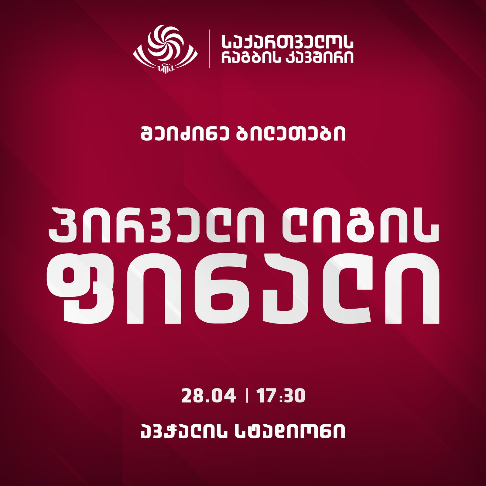

SPORTFEST — one identity, three colourways 3


Sponsors and campaigns 4


Film and motion 2
Both of these are built type, not a re-cut of somebody else's film.